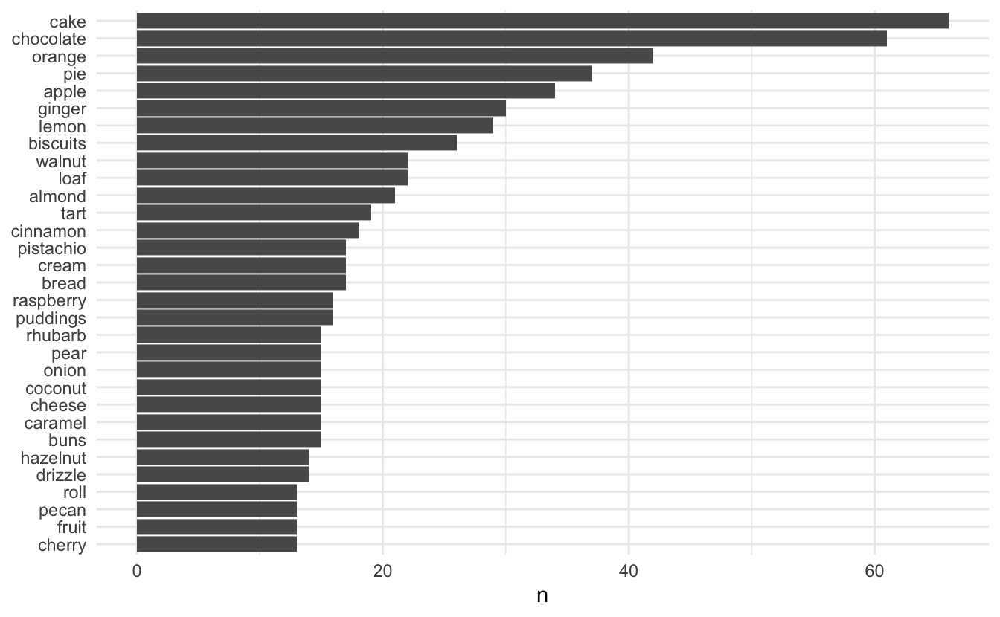
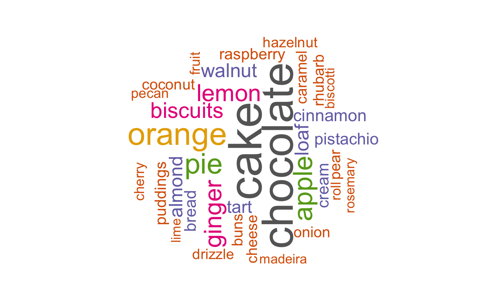
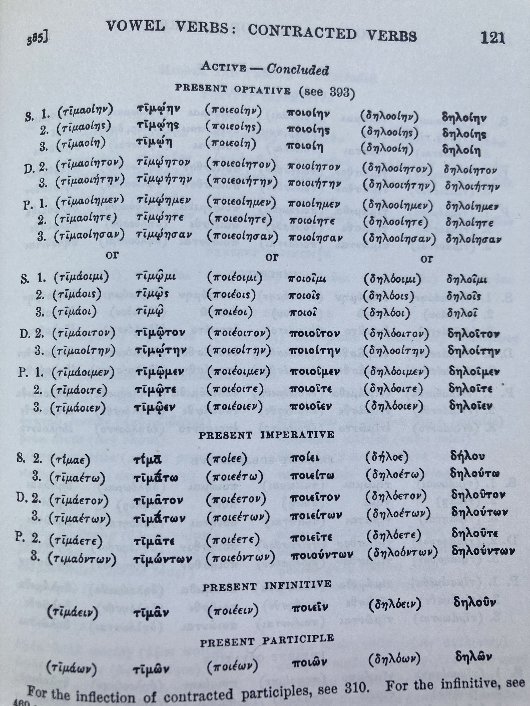

Session 19: Word Clouds via Tidytext

New To Code Club?
-
First, check out the Code Club Computer Setup instructions, which also has some pointers that might be helpful if you’re new to R or RStudio.
-
Please open RStudio before Code Club to test things out – if you run into issues, join the Zoom call early and we’ll troubleshoot.
Session Goals
- Learn the fundamentals of text mining.
- Learn how to do text mining in a tidyverse setting.
- Reuse some of our dplyr and ggplot skills on text.
- Learn how to very simply create word cloud visualizations.
Setup
This is another in our current series on text processing. We’ll be using the following previously used packages which you should load first (install them if you haven’t already):
We’ll also be using the following packages, which you should install and load:
# Uncomment the following line to install:
# install.packages(c("tidytext", "gutenbergr", "wordcloud"))
library(tidytext)
library(gutenbergr)
library(wordcloud)
Introduction
In this CodeClub session we’ll see how to create word clouds (also known as tag clouds) from text, using the tidytext and wordcloud packages. A word cloud is a visualization of word frequencies, graphically highlighting the most common words.
We need to get some text from somewhere, so first let’s do it in the simplest possible way. Here we manually enter a quote, line by line, as a vector of five character strings. This is the first stanza from Robert Lowell’s Skunk Hour:
lowell <- c("Nautilus Island's hermit",
"heiress still lives through winter in her Spartan cottage;",
"her sheep still graze above the sea.",
"Her son's a bishop. Her farmer is first selectman in our village;",
"she's in her dotage.")
In textual analysis we distinguish between word types, and word tokens (multiple instances of those words in text). For example there are two tokens of the word-type “still” in this stanza:
heiress
stilllives through winter
her sheepstillgraze above the sea
And slightly more abstractly there are four tokens of “her”, modulo capitalization:
herSpartan cottage
hersheep still graze
Herson’s a bishop.
Herfarmer
Formally, it’s the token frequency of the word types we are ultimately interested in capturing. So: two tasks, extract the word tokens, and count them! Done!
The reason this is tricky is that natural language text is messy: the task of extracting a clean set of tokens to count is termed text mining or tokenization. We would also like to get the output into a tidyverse compliant data frame, so we can use familiar dplyr and ggplot functions to analyze it.
We could imagine attacking this using stingr functions:
lowell_tokens <- lowell %>%
# convert upper to lower case; returns a character vector.
str_to_lower() %>%
# remove punctuation with a character class; returns a list.
str_extract_all("[a-z]+") %>%
# flatten that list
unlist() %>%
# stick it in a data frame
as_tibble()
print(lowell_tokens, n = 38)
#> # A tibble: 38 x 1
#> value
#> <chr>
#> 1 nautilus
#> 2 island
#> 3 s
#> 4 hermit
#> 5 heiress
#> 6 still
#> 7 lives
#> 8 through
#> 9 winter
#> 10 in
#> 11 her
#> 12 spartan
#> 13 cottage
#> 14 her
#> 15 sheep
#> 16 still
#> 17 graze
#> 18 above
#> 19 the
#> 20 sea
#> 21 her
#> 22 son
#> 23 s
#> 24 a
#> 25 bishop
#> 26 her
#> 27 farmer
#> 28 is
#> 29 first
#> 30 selectman
#> 31 in
#> 32 our
#> 33 village
#> 34 she
#> 35 s
#> 36 in
#> 37 her
#> 38 dotage
This is a good start: it gets rid of the capitalization issue, and also gets rid of the punctuation. But there’s a problem. The regular expression pattern [a-z]+ doesn’t recognize possessives or contractions: it just strips anything that’s not a letter, so it messes up with Island's, son's, and she's: welcome to the subtleties of processing natural language text algorithmically! Exceptions, exceptions!!
We could fiddle about with our regex, but… there’s a package for that! This kind of text mining is exactly what the tidytext package was built for. It will simultaneously strip punctuation intelligently and ‘unnest’ lines into word tokens.
Tidytext functions need a dataframe to operate on. So first we need to get the poem into a data frame; here we’ll use the column name text.
lowell_df <- tibble(text = lowell)
lowell_df
#> # A tibble: 5 x 1
#> text
#> <chr>
#> 1 Nautilus Island's hermit
#> 2 heiress still lives through winter in her Spartan cottage;
#> 3 her sheep still graze above the sea.
#> 4 Her son's a bishop. Her farmer is first selectman in our village;
#> 5 she's in her dotage.
Each string in the character vector becomes a single row in the data frame.
Again we want one word-token per row, to ‘tidy’ our data. This is what tidytext::unnest_tokens() does. We’re going to unnest words in this case (we can unnest other things, like characters, sentences, regexes, even tweets) and we need to specify the variable in the dataframe we are unnesting (in this case just text). This will create a new word-token data frame, and we’ll name the variable in the data frame word. This is important (see later on stop words).
lowell_tidy <- lowell_df %>%
unnest_tokens(word, text)
print(lowell_tidy, n = 35)
#> # A tibble: 35 x 1
#> word
#> <chr>
#> 1 nautilus
#> 2 island's
#> 3 hermit
#> 4 heiress
#> 5 still
#> 6 lives
#> 7 through
#> 8 winter
#> 9 in
#> 10 her
#> 11 spartan
#> 12 cottage
#> 13 her
#> 14 sheep
#> 15 still
#> 16 graze
#> 17 above
#> 18 the
#> 19 sea
#> 20 her
#> 21 son's
#> 22 a
#> 23 bishop
#> 24 her
#> 25 farmer
#> 26 is
#> 27 first
#> 28 selectman
#> 29 in
#> 30 our
#> 31 village
#> 32 she's
#> 33 in
#> 34 her
#> 35 dotage
Punctuation has been stripped and all words are lower case, but possessives and contractions are preserved (fancy usage of str_ regular expression functions under the hood…).
Bakeoff!
Now that we have the basic idea, let’s look at a more interesting data set, from the bakeoff package.
First we’ll create a data frame with just the signature column from the bakes data set:
signature_df <- select(bakes, signature)
signature_df
#> # A tibble: 548 x 1
#> signature
#> <chr>
#> 1 "Light Jamaican Black Cakewith Strawberries and Cream"
#> 2 "Chocolate Orange Cake"
#> 3 "Caramel Cinnamon and Banana Cake"
#> 4 "Fresh Mango and Passion Fruit Hummingbird Cake"
#> 5 "Carrot Cake with Lime and Cream Cheese Icing"
#> 6 "Cranberry and Pistachio Cakewith Orange Flower Water Icing"
#> 7 "Carrot and Orange Cake"
#> 8 "Sticky Marmalade Tea Loaf"
#> 9 "Triple Layered Brownie Meringue Cake\nwith Raspberry Cream"
#> 10 "Three Tiered Lemon Drizzle Cakewith Fresh Cream and freshly made Lemon Curd"
#> # … with 538 more rows
Next we tokenize by word on the signature column:
signature_tidy <- signature_df %>%
unnest_tokens(word, signature)
signature_tidy
#> # A tibble: 2,762 x 1
#> word
#> <chr>
#> 1 light
#> 2 jamaican
#> 3 black
#> 4 cakewith
#> 5 strawberries
#> 6 and
#> 7 cream
#> 8 chocolate
#> 9 orange
#> 10 cake
#> # … with 2,752 more rows
Now we want to count those tokens: i.e. we want to collapse all duplicate word tokens into a single word type, with the corresponding frequency. Since we now have tidy data, dplyr to the rescue!
dplyr
count()lets you quickly count the unique values of one or more variables. The optionsort, if TRUE, will show the largest groups at the top.
signature_count <- signature_tidy %>%
count(word, sort = TRUE)
signature_count
#> # A tibble: 806 x 2
#> word n
#> <chr> <int>
#> 1 and 321
#> 2 cake 66
#> 3 chocolate 61
#> 4 orange 42
#> 5 with 42
#> 6 pie 37
#> 7 apple 34
#> 8 ginger 30
#> 9 lemon 29
#> 10 biscuits 26
#> # … with 796 more rows
We’re way more interested in cake than and: this is an example of a stop word:
In computing, stop words are words which are filtered out before or after processing of natural language data (text). “stop words” usually refers to the most common words in a language.
One of our major performance (search) optimizations… is removing the top 10,000 most common English dictionary words (as determined by Google search). It’s shocking how little is left of most posts once you remove the top 10k English dictionary words…
The tidytext package has a database of just over a thousand of these words, including ‘and’:
print(stop_words, n = 30)
#> # A tibble: 1,149 x 2
#> word lexicon
#> <chr> <chr>
#> 1 a SMART
#> 2 a's SMART
#> 3 able SMART
#> 4 about SMART
#> 5 above SMART
#> 6 according SMART
#> 7 accordingly SMART
#> 8 across SMART
#> 9 actually SMART
#> 10 after SMART
#> 11 afterwards SMART
#> 12 again SMART
#> 13 against SMART
#> 14 ain't SMART
#> 15 all SMART
#> 16 allow SMART
#> 17 allows SMART
#> 18 almost SMART
#> 19 alone SMART
#> 20 along SMART
#> 21 already SMART
#> 22 also SMART
#> 23 although SMART
#> 24 always SMART
#> 25 am SMART
#> 26 among SMART
#> 27 amongst SMART
#> 28 an SMART
#> 29 and SMART
#> 30 another SMART
#> # … with 1,119 more rows
Note that the name of the stop word column is word, and the name we used in our tokenized column is word (now you will see why we used that name) so we can use dplyr’s anti_join() to filter the word tokens!
anti_join()returns all rows from x without a match in y (where x are the word tokens, and y are the stop words)
signature_count <- signature_tidy %>%
count(word, sort = TRUE) %>%
anti_join(stop_words)
#> Joining, by = "word"
signature_count
#> # A tibble: 762 x 2
#> word n
#> <chr> <int>
#> 1 cake 66
#> 2 chocolate 61
#> 3 orange 42
#> 4 pie 37
#> 5 apple 34
#> 6 ginger 30
#> 7 lemon 29
#> 8 biscuits 26
#> 9 loaf 22
#> 10 walnut 22
#> # … with 752 more rows
Since we are in the tidyverse, we can pipe our results into ggplot. First we filter on counts above a certain threshold (here 12, just for visualization purposes):
signature_count %>%
filter(n > 12) %>%
ggplot(aes(n, word)) +
geom_col() +
theme_minimal() +
labs(y = NULL)

This is ordered alphabetically by default, bottom to top; but we can reorder by count (n) using dplyr mutate():
signature_count %>%
filter(n > 12) %>%
mutate(word = reorder(word, n)) %>%
ggplot(aes(n, word)) +
geom_col() +
theme_minimal() +
labs(y = NULL)

We now have everything we need for a word cloud: word types and their token frequencies:
The only obligatory arguments to wordcloud() are the first two: the rest just let you tweak the graphic:
wordcloud(words = signature_count$word,
freq = signature_count$n,
min.freq = 12,
random.order=FALSE,
rot.per=0.3,
colors=brewer.pal(8, "Dark2"))

min.freq lets you filter on a frequency threshold. random.order=FALSE plots words in decreasing frequency (highest most central); rot.per is the proportion of words with 90 degree rotation; colors=brewer.pal(8, "Dark2") lets you choose an RColorBrewer color palette of your choice.
Lemmatization
If you create a count data frame of signature_tidy without the sort = TRUE option, the words are sorted alphabetically. And if you look through that table you will see many instances such as apple, apples; apricot, apricots; cake, cakes etc. Arguably, these are the same word type (think “dictionary word”) just grammatical variations. Properly collapsing these into a single type is called lemmatization: a very difficult problem which would take us far afield into the morphology of words. Again in general there are many exceptions, only partly due to English borrowing so many words from other languages: besides apple, apples there is mouse, mice; self, selves; bacillus, bacilli; basis, bases. etc. These are known as irregular plurals.
Verbs are worse! Perhaps you would also consider the inflectional forms run, runs, ran, running as the same type, just as a dictionary does. How do you reduce those algorithmically? And if you consider inflectional forms as the same dictionary word, how would you tackle Ancient Greek, which has hundreds of inflected forms for the same verb? Here are just a few, there are pages and pages of them…

Currently machine learning has been unleashed on this problem, with limited success. The traditional computational linguists' algorithms are still winning…
The gutenbergr package
Say we wanted to do a word cloud for a more substantive text like Darwin’s Origin of Species.
Project Gutenberg is a volunteer effort to digitize and archive cultural works and is the oldest digital library. It has over 60,000 books in the public domain (including Darwin’s works).
The gutenbergr package allows you to download any of these works directly into a data frame using just the Project Gutenberg ID. This is then perfect input for tidytext. The package provides all the metadata to search for author and work IDs inside R (you can also just find the ID by searching on the Project Gutenberg website):
darwins_works <- gutenberg_metadata %>%
filter(author == "Darwin, Charles")
darwins_works
#> # A tibble: 40 x 8
#> gutenberg_id title author gutenberg_autho… language gutenberg_books… rights
#> <int> <chr> <chr> <int> <chr> <chr> <chr>
#> 1 944 "The… Darwi… 485 en Travel/Harvard … Publi…
#> 2 1227 "The… Darwi… 485 en NA Publi…
#> 3 1228 "On … Darwi… 485 en Harvard Classic… Publi…
#> 4 2009 "The… Darwi… 485 en Harvard Classic… Publi…
#> 5 2010 "The… Darwi… 485 en NA Publi…
#> 6 2087 "Lif… Darwi… 485 en NA Publi…
#> 7 2088 "Lif… Darwi… 485 en NA Publi…
#> 8 2300 "The… Darwi… 485 en NA Publi…
#> 9 2355 "The… Darwi… 485 en NA Publi…
#> 10 2485 "The… Darwi… 485 en Botany Publi…
#> # … with 30 more rows, and 1 more variable: has_text <lgl>
An inspection of the results of Origin of Species on the website reveals that the latest edition is ID 2009. Let’s grab it:
OoS <- gutenberg_download(2009)
#> Determining mirror for Project Gutenberg from http://www.gutenberg.org/robot/harvest
#> Using mirror http://aleph.gutenberg.org
In the breakout rooms, we’ll work through inspecting the frequencies and creating a word cloud for this text.
The gutenbergr package is extremely useful, but as long as you can read a document into R, you can then convert it to a data frame as we did in the very first example above, and then the tidytext pipeline will work. The readtext package can import a variety of formats, including PDFs and Microsoft Word documents.
Breakout rooms
Exercise 1
Run the command:
OoS <- gutenberg_download(2009)
and inspect the data frame. Identify the name of the column you want to tokenize.
Then use the unnest_tokens() command to create a data frame of word tokens.
Hints (click here)
It's the
text column you want. gutenbergr includes the gutenberg_ID in case you download multiple texts into the same data frame. Remember to name the column in the new data frame word so we can filter any stop words later on. Solution (click here)
OoS <- gutenberg_download(2009)
OoS
#> # A tibble: 21,556 x 2
#> gutenberg_id text
#> <int> <chr>
#> 1 2009 "1228 1859, First Edition"
#> 2 2009 "22764 1860, Second Edition"
#> 3 2009 "2009 1872, Sixth Edition, considered the definitive edition…
#> 4 2009 ""
#> 5 2009 ""
#> 6 2009 ""
#> 7 2009 ""
#> 8 2009 "On the Origin of Species"
#> 9 2009 ""
#> 10 2009 "BY MEANS OF NATURAL SELECTION,"
#> # … with 21,546 more rows
OoS_tidy <- OoS %>%
unnest_tokens(word, text)
OoS_tidy
#> # A tibble: 209,048 x 2
#> gutenberg_id word
#> <int> <chr>
#> 1 2009 1228
#> 2 2009 1859
#> 3 2009 first
#> 4 2009 edition
#> 5 2009 22764
#> 6 2009 1860
#> 7 2009 second
#> 8 2009 edition
#> 9 2009 2009
#> 10 2009 1872
#> # … with 209,038 more rows
Exercise 2
Count and sort the tokens into a new data frame. Inspect the output. Are there any stop words?
Hints (click here)
Pipe the
word column of the data frame into the dplyr count() function with the sort = TRUE option. Solution (click here)
OoS_count <- OoS_tidy %>%
count(word, sort = TRUE)
OoS_count
#> # A tibble: 9,233 x 2
#> word n
#> <chr> <int>
#> 1 the 14570
#> 2 of 10438
#> 3 and 5853
#> 4 in 5414
#> 5 to 4753
#> 6 a 3368
#> 7 that 2749
#> 8 as 2230
#> 9 have 2114
#> 10 be 2099
#> # … with 9,223 more rows
Exercise 3
Remove the stop words from the output and inspect the results.
Hints (click here)
Use
antijoin() with the tidytext stop_words data frame: Solution (click here)
OoS_count <- OoS_tidy %>%
count(word, sort = TRUE) %>%
anti_join(stop_words)
#> Joining, by = "word"
OoS_count
#> # A tibble: 8,678 x 2
#> word n
#> <chr> <int>
#> 1 species 1921
#> 2 forms 565
#> 3 selection 561
#> 4 natural 535
#> 5 varieties 486
#> 6 plants 471
#> 7 animals 436
#> 8 distinct 357
#> 9 life 350
#> 10 nature 325
#> # … with 8,668 more rows
Exercise 4
Visualize the counts using ggplot(), from highest frequency to lowest, using a frequency cutoff of 200. Does any one word stand out in any way?
Does the tidytext package perform lemmatization? Are there any irregular plurals in this result?
Hints (click here)
Use a dplyr
filter() command on the n column, and, well just look at the examples in the presentation for the details of piping it into ggplot()! Solution (click here)
OoS_count %>%
filter(n > 200) %>%
mutate(word = reorder(word, n)) %>%
ggplot(aes(n, word)) +
geom_col() +
theme_minimal() +
labs(y = NULL)

tidytext does not lemmatize. There are many plurals in this list, so undoubtedly there are corresponding singulars of lower frequency. Indeed we see both forms and form. And of course the irregular genera is the plural of genus.
Exercise 5
Create a word cloud of this data frame, with the same frequency cut off as the ggplot() (200). Otherwise use the same settings as in the presentation. Tweak those settings, especially the frequency threshold and rotation proportion. See what happens when you set random.order=TRUE.
Hints (click here)
The option for the the frequency threshold is
min.freq = 200. Solution (click here)
wordcloud(words = OoS_count$word,
freq = OoS_count$n,
min.freq = 200,
random.order=FALSE,
rot.per=0.35,
colors=brewer.pal(8, "Dark2"))